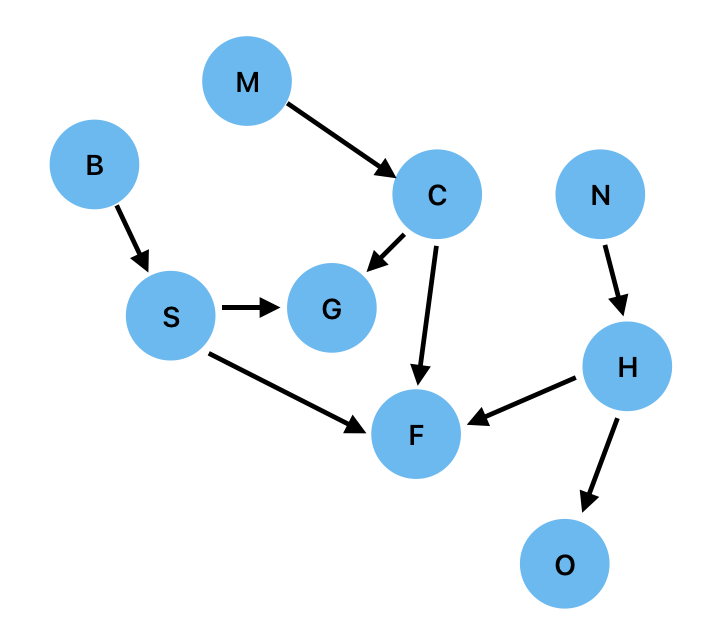
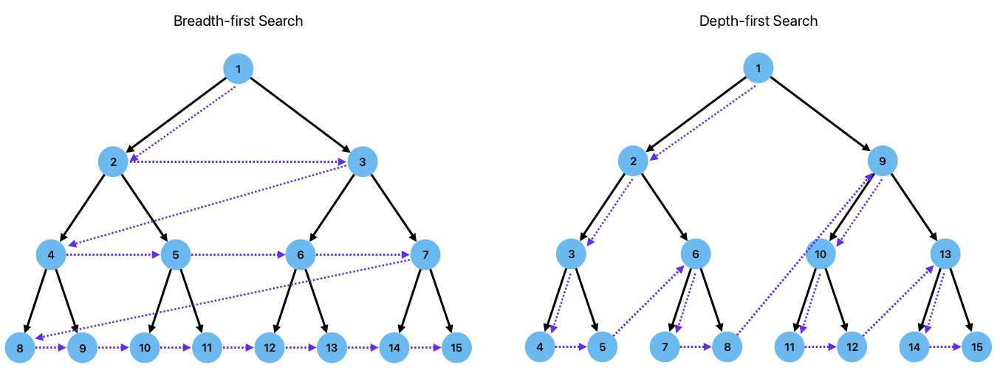

Proof and Search#
In forward and backward chaining, we will often have a choice of rules that we can invoke. Consider the following slightly artificial example of a rule base:
If \(x\) goes “moo” then \(x\) is a cow.
If \(x\) goes “baa” then \(x\) is a sheep.
If \(x\) goes “neigh” then \(x\) is a horse.
If \(x\) is a cow then \(x\) eats grass.
If \(x\) is a sheep then \(x\) eats grass.
If \(x\) is a horse then \(x\) eats oats.
If \(x\) is a cow then \(x\) has four legs.
If \(x\) is a sheep then \(x\) has four legs.
If \(x\) is a horse then \(x\) has four legs.
One important and natural way to think about inference on this problem is as search on a graph. Using the notation M: goes "Moo", C: is a Cow etc we define our graph with a node for each antecedent/consequent, and an arrow that links the antecedent to its consequent, as shown below:

In these terms, forward chaining involves following the arrows, allowing to easily see that if \(x\) goes “baa” then \(x\) must east grass (path B->S->G). Conversely backward chaining requires us to move counter to the arrows and we can easily see that if we know as a fact that \(x\) goes “neigh” (ie, that N is True), then the goal O (\(x\) eats oats) can be proven by following the backward path O<-H<-N.
The graphical representation allows us to see an immediate challenge: in both forward chaining and backward chaining, we can have choices. In forward chaining, the choice comes when we have multiple possible outgoing arrows to follow. For example, from node C we can traverse to both G and F, and we have no way to know which will get us to our goal. In backward chaining, we have to make choices at nodes with multiple incoming arrows, for example node \(G\). If we are trying to prove \(G\) via backward chaining we have a choice of which arrow to follow backwards first, and whether C or S should be the new subgoal.
How do we make these choices to ensure that we are fully exploring the graph, and doing so efficiently? We need to search the graph systematically. There are two comon ways to do this which we will illustrate via examples of backward chaining.
Breadth-first Search#
Consider the hypothesis/goal “Jeff eats grass” (G) given the fact “Jess goes ‘moo’” (ie M is True). There are several ways in which a solution to this problem could be reached, because there are multiple rules that have consequents that match our goal, i.e. multiple arrows into G from C and S.
In breadth-first search, we divide the graph into layers that are the same distance (number of connections) from our starting node G, and we search each layer exhaustively, either stopping when we have found a node that solves our problem or moving on to the next layer when we have examined all nodes in the current layer. In this examples
We start the goal node
G.In the first layer, we have two nodes
CandSthat have direct connections intoG. We examine both of these nodes to see whether they solve the problem (ie is eitherCorStrue?). Neither of these nodes is known to be True so they do not prove our goal. We must therefore look at the next layer of nodes, those that have connections intoGandS.The next layer of nodes contains
BandN. We first examineBand find that we do not know whether this is True. We then examineMand find that this node is True because it was given as an initial fact. We have therefore proven our goal statementGas we have found a direct pathM->C->Gto our goal from a known fact.
If we were to solve the same problem via breadth first search applied to forward chaining, we would approach it in the following way:
Our goal is
GWe start at known fact
MSearch layer one, which contains only node
C. This does not satisfy our goal.Search layer two, which contains
FandG.Fdoes not satisfy our goal, butGdoes, thus provingGto be True.
Depth-first Search#
Let us consider the same problem by a different approach. In depth-first search we again structure the nodes into layers, but instead of searching each layer exhaustively before moving on to the next layer, we follow the connections to further layers, stopping only when we find a solution and cannot go any further. At this point, we track back a layer and follow the connections deeper. In this example, we proceed as follows:
As before, we start at the goal node
G.Layer 1 contains
CandS. We choose one of these, saySand evaluate it.Sis not know to be True, and so we proceed to search those nodes that have connections into S (B).Bis not known to be True, and has no incoming arrows so we cannot continue any further.We therefore backtrack to
Gand then examine the next node in layer 1 (C) which is not know to be True.We then examine the nodes that connect into
C, which is justMand we know thatMis True. We have therefore proven our goal.
Depth-first forward chaining for the same problem would proceed as follows:
Our goal is
G.We start at known fact
MExamine
Swhich does not satisfy our goal.Examine the nodes that connect to
S(B) which do not satisfy our goal.Examine
Cwhich does not satisfy our goal.Examine the nodes that connect to
C(M) which does satisfy our goal.
These two approaches are illustrated graphically in the following figure using the example of a balanced binary tree for simplicity, but the principles is readily transferrable to any graph.

Breadth- vs depth-first Searching#
Given a choice of two strategies for graph search, and hence for rule-basedf inference, it is natural to ask “which method should I use?”. The answer to this question is, perhaps inevitably, that “it depends”.
We might be tempted to select a method based on space/time complexity, but these are the same for both approaches. The time complexity depends on both the number of nodes/vertices \(\lvert V\rvert\) and the number of edges/arrows \(\lvert E\rvert\), and is expressed as \(\mathcal{O}(\lvert V\rvert+\lvert E\rvert)\). The space complexity, on the other hand, depends only on the number of vertices and is \(O(\lvert V\rvert)\).
In practice depth-first is usually preferred because it permits a simple recursive implementation. However, great care must be taken to ensure that there are no “cycles” in the graph because otherwise depth-first search will get stuck in a cycle. Breadth-first approaches are sometimes useful when you want to find the shortest chain of reasoning that leads to a particular outcome, but this is a relatively niche application.